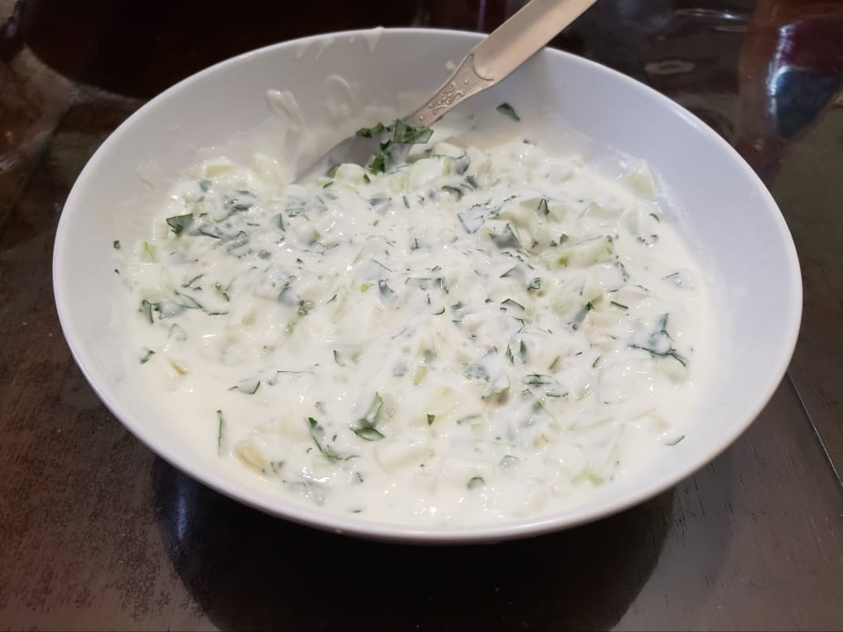

Raita

Ingredients:
- 1 cup Plain yogurt
- 1/4 tsp Salt
- 1 Medium onion, finely diced
- 1/2 cup Cucumber, peeled and finely chopped
- 2 tbsp Cilantro, chopped
- Optional: 1-2 Green chilis, deseeded and finely chopped
- Optional: 1/2 tsp Cumin
Instructions:
- Into a large bowl, whisk together the yogurt and salt with a fork.
- Mix in the onion, cucumber, cilantro, and chili if using. Optionally, garnish with cumin.